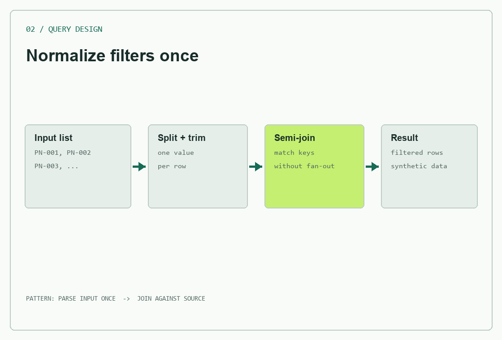
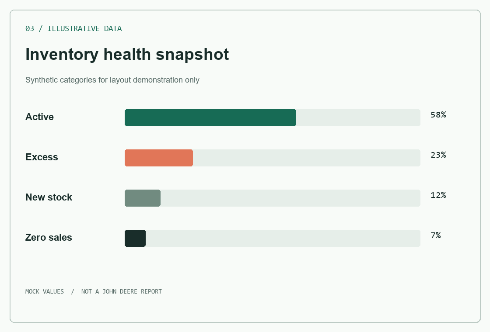

Analytics and internal tools experience; transitioning toward backend engineering.
A few problems, and how I approached them
Selected work.
Business context stays high-level. Visuals use synthetic examples; no employer code or data is published here.
01 Internal project / public summary
Workflow automation server
Connecting everyday work to the systems behind it.
Contributed to the design and iterative development of a local Node.js server using the Model Context Protocol (MCP). It exposes focused tools for Microsoft Graph workflows and browser-based operational tasks, with validated inputs and workflow-specific rules.
Role
Workflow design, implementation and validation
Approach
Local stdio server; Graph API pagination and filtering
Scope
Internal tool, not a cloud production service
Node.js
MCP SDK
Microsoft Graph
Zod
Playwright
Conceptual architecture, recreated for this portfolio
02 Analytics engineering
Large-list SQL filtering
Make a useful query scale with the way people work.
For a machine-population analysis, users needed to filter by long lists of part numbers and attributes. I reworked the pattern to normalize input values once and match them through semi-joins, instead of parsing each list for every source row.
Design
Split, trim and materialize filter values
Trade-off
Batch-friendly filtering; no unsupported speed claim
Output
Parameterized analytics and a self-service dashboard
SQL
Databricks
Power BI
Query design

Generic data flow; example values are synthetic
03 Operational analytics
Inventory decisions, made visible
Turn fragmented reporting into a repeatable review.
Built reporting and analysis workflows for parts inventory and dealer operations. The work combines data modeling, SQL and BI to help teams spot availability gaps, excess stock and transfer opportunities, then focus conversations on the next action.
Focus
Inventory health and service-level indicators
Workflow
Refresh, analyze, communicate, follow up
Principle
Actionable context over dashboard volume
SQL
Power BI
Python
Data modeling

Illustrative data only; not an employer report
The through-line
Operational context. Engineering curiosity.
I am an Industrial Engineer and Data Science master's student with experience across production control, global parts planning, analytics and dealer inventory management at John Deere.
My software experience is strongest in SQL, Python, Node.js integrations and data products. I am moving toward backend engineering by extending that foundation into service design, testing and maintainable APIs.